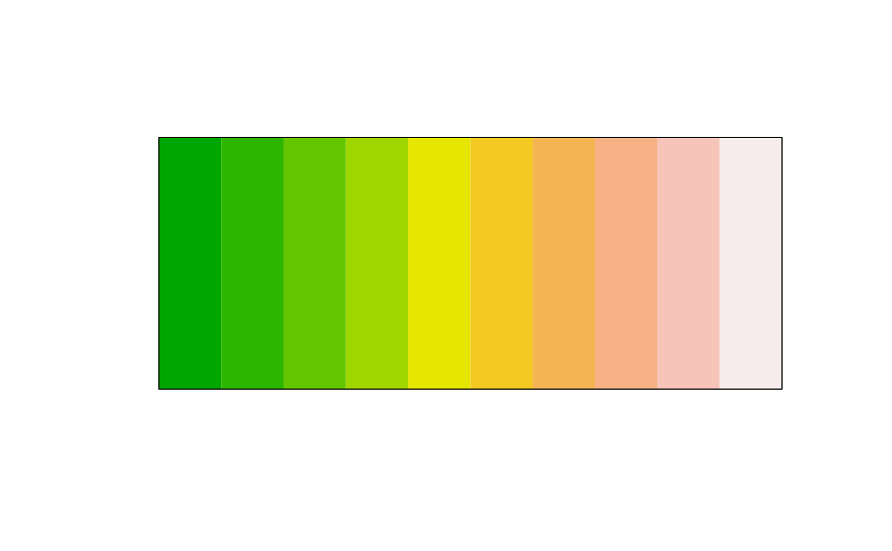
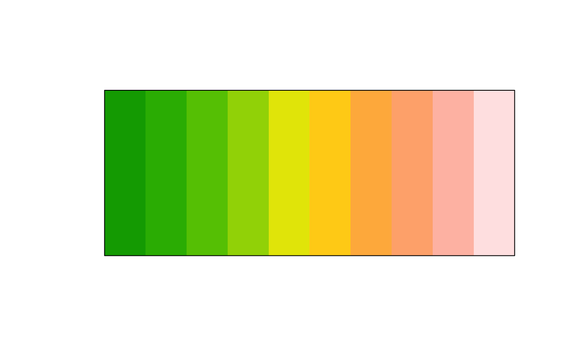

Make a color more saturated
clr_saturate(col, shift = 0.5)
| col | a color object or vector of any of the three kinds of R color specifications, i.e., either a color name (as listed by colors()), a hexadecimal string of the form "#rrggbb" or "#rrggbbaa" (see rgb), or a positive integer i meaning palette()[i]. |
|---|---|
| shift | Numeric between 0 and 1, 0 will do zero saturation, 1 will do complete saturation. Defaults to 0.5. |
https://en.wikipedia.org/wiki/HSL_and_HSV
a color object of same length as col.
The colors will be trainsformed to HSL color space (hue, saturation,
lightness) where the saturation of the color will be modified.
The saturation of a color takes a value between 0 and 1, with 0 being black
and 1 being white. The shift argument takes a value between 0 and 1,
where 0 means that the saturation stays unchanged and 1 means completely
saturated. As an example, if the saturation of the color is 0.6 and shift is
0.5, then the saturation be set to the halfway point between 0.6 and 1 which
is 0.8.
clr_desaturate
